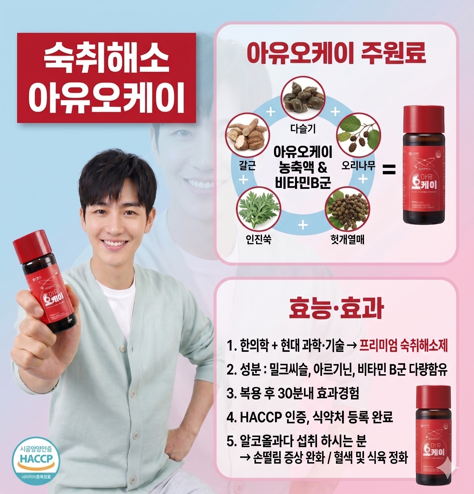
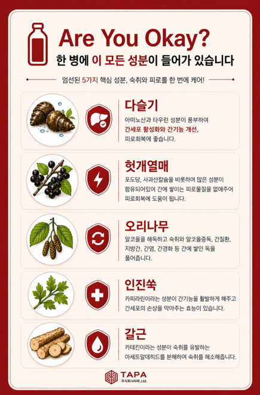
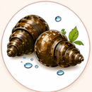
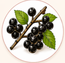
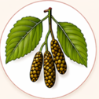
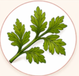
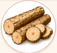
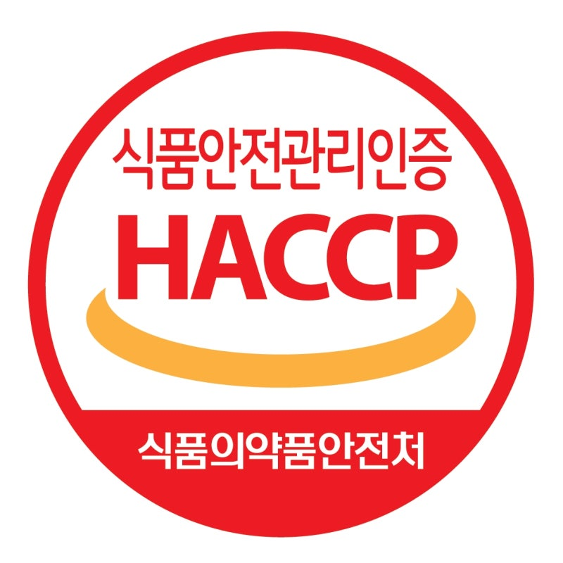

숙취와 피로를 한 번에 케어!
Are You Okay?
엄선된 5가지 핵심 성분이 한 병에.
오늘 하루도 오케이하게 시작하세요.

주식회사 타파
TAPA(주식회사 타파)는 바쁜 현대인들의 일상 속 피로와 숙취를 타파하기 위해 설립되었습니다.
자연에서 얻은 순수한 원료를 바탕으로 첨단 기술을 접목하여, 누구나 믿고 섭취할 수 있는
최고 품질의 제품을 생산합니다. 정직한 신념과 투명한 공정으로 여러분의 내일에 활력을 더해드리겠습니다.
스와이프하여 팜플렛 보기 👉
최첨단 제조 공장
철저한 위생 관리와 최신식 설비로 안전하게 생산합니다.
한 병에 이 모든 성분이


다슬기
아미노산과 타우린 성분이 풍부하여 간세포 활성화와 간기능 개선, 피로회복에 좋습니다.

헛개열매
포도당, 사과산칼슘 등이 함유되어 간에 쌓이는 피로물질을 없애주어 피로회복에 도움을 줍니다.

오리나무
알코올을 해독하고 숙취와 알코올중독, 간질환 등 간에 쌓인 독을 풀어줍니다.

인진쑥
카피라린이라는 성분이 간기능을 활발하게 해주고 간세포의 손상을 막아주는 효능이 있습니다.

갈근
카테킨 성분이 숙취를 유발하는 아세트알데히드를 분해하여 숙취를 해소해 줍니다.
안전 및 품질 인증
안심하고 드실 수 있도록 엄격한 심사를 통과했습니다.
